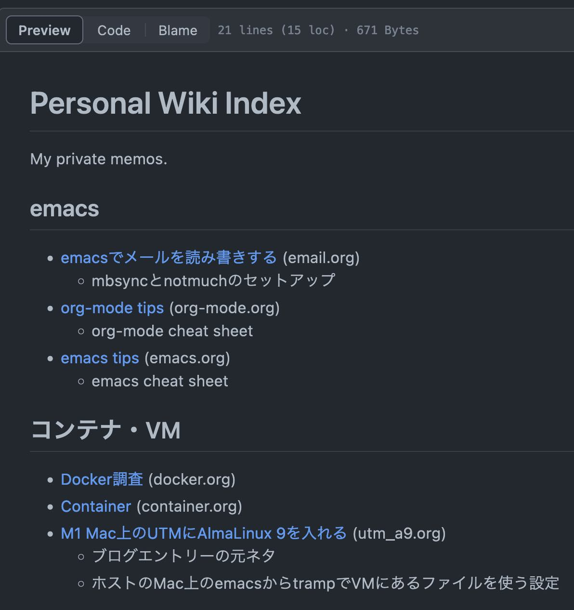

Table of Contents
1. はじめに
Happy independence day! 今日はお休みなので、以前作ったツールのマイナーエンハンスをしました。
2. orgidx
私は自分の作ったPythonツール類をgithubに置いて公開しています。 こちら。
自作ツールの中には、自分でわりとよく使っているものがあります。例えば、
- ボキャビル用Webアプリのこれ: https://github.com/achiwa912/vbs
- 書き込み用カレンダー: https://github.com/achiwa912/simcal; そして、
- プライベートWikiのインデックス作成: https://github.com/achiwa912/orgidx
などです。
最後のorgidxは、github等のレポジトリにたくさんのorgファイルを置く際に、各orgファイルへのリンクをまとめたインデックスファイルを作成するツールです。以前の ブログエントリー で紹介しています。
今回、orgファイルのタイトルに加えて、説明も追記できるようにしました。こんな感じのインデックスページが作成されます。

タイトルはorgファイル内の #+TITLE: メタデータ、説明は #+SUBTITLE: メタデータを使います。
3. もっと便利な方法は？
orgidxを、自分ではそれなりに満足して普段から使っていますが、もっと便利な方法は無いだろうかと思っています。他の人達はどうしているのでしょうか。org-roamを使っているのかな。